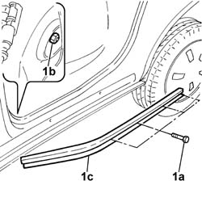

7020C25 Sliding side door lower sliding GUIDE, left or right - R.R.
- Path
- Procedures > 70 FITTINGS > 7020 LOAD CARRYING COMPARTMENT DOORS > 7020C sliding side door > 7020C25 Sliding side door lower sliding GUIDE, left or right - R.R.
- Kind
- repair procedure (removal / refitting; the operation number is the code)
- Applies to
- engines: 1.4 8v, 1.6 16v, 1.3 JTD 16V, 1.9 JTD 8V; all production periods
- Interactive page
- https://sloeber94.github.io/elrnDB-fDbl/en/#/2585056
Applies to: engines: 1.4 8v, 1.6 16v, 1.3 JTD 16V, 1.9 JTD 8V; all production periods; only with equipment: 7 seater
 Removing
Removing
 Refitting
RefittingCarry out
Op. 7040L44 REAR DOOR HOUSING RUNNING BOARD (ONE), LEFT OR RIGHT - R.R..
Carry out
Op. 7020C12 SLIDING SIDE DOOR END OF TRAVEL STOP LEFT OR RIGHT - R.R..
Carry out
Op. 7020D50 DEVICE FOR KEEPING SLIDING DOOR OPEN - R+R.
Carry out
Op. 7020C24 LOWER SUPPORT AND SLIDING DEVICE FOR ONE SLIDING SIDE DOOR, LEFT OR RIGHT - R.R..
1. Open the front door and unscrew the bolts (1a). - working from inside, raise the floor mat as far as necessary and remove the nut protection plug, undo nut (1b) and remove lower guide (1c).

Applies to: engines: 1.4 8v, 1.6 16v, 1.3 JTD 16V, 1.9 JTD 8V; all production periods; only with equipment: 7 seater
Refitting
RemovingPosition the lower slide guide by locating the reference pin on the guides in its seat.
Tighten the inner retaining nut and insert the protective plug. Arrange the floor mat.
Tighten the outer bolts securing the lower slide guide.
Carry out
Op. 7020C24 LOWER SUPPORT AND SLIDING DEVICE FOR ONE SLIDING SIDE DOOR, LEFT OR RIGHT - R.R..
Carry out
Op. 7020D50 DEVICE FOR KEEPING SLIDING DOOR OPEN - R+R.
Carry out
Op. 7020C12 SLIDING SIDE DOOR END OF TRAVEL STOP LEFT OR RIGHT - R.R..
Carry out
Op. 7040L44 REAR DOOR HOUSING RUNNING BOARD (ONE), LEFT OR RIGHT - R.R..